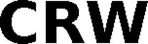

Trade Mark Journal No.2026/012 20 March 2026
WO0000001905004 (6,7,8,9,10,18,20,21,25,26,28)
Office of origin: European Union Intellectual Property Office (EUIPO)
Date of International Registration:26 September 2025
Date of designation in the UK:
26 September 2025

- Class 6
- Spurs.
- Class 7
- Shearing machines for animals; electric shearing machines.
- Class 8
- Hand-operated hygienic and beauty implements for humans and animals; animal shearing implements; electrically operated hair clippers [hand instruments].
- Class 9
- Riding helmets; protective and safety equipment; fall arrest apparatus; head protection; safety clothing for protection against accident or injury; shields for protecting the body against injury.
- Class 10
- Feeding cups.
- Class 18
- Stirrups; stirrups of metal; saddlery, whips and apparel for animals; bridoons; capes for pets; costumes for animals; collars for animals; horse saddles; horse blankets; leads for animals; pet leads; face masks for equines; leather leashes; ear bonnets for horses; whips; rain sheets for horses; jockey sticks; riding saddles; saddlery; saddlery of leather; stirrup leathers; covers for animals; reins; bridles [harness]; fastenings for saddles; straps of leather [saddlery]; halters; equine leg wraps; covers and wraps for animals; bits for animals [harness]; harnesses.
- Class 20
- Dog baskets; pet crates.
- Class 21
- Cages for household pets; fur brushes for animals; toothbrushes for animals; pet feeding bowls.
- Class 25
- Footwear; headgear; clothing; jackets [clothing]; tops [clothing]; riding shoes; ankle boots; ladies' boots; leather shoes; shoes; sneakers; boots; slippers; chaps (clothing); trews; trousers; fleeces; casual jackets; neck warmers; gloves [clothing]; sports pants; sportswear; knee-high stockings; leggings [trousers]; parkas; riding gloves; riding jackets; stockings; stretch pants; mock turtlenecks; women's outerclothing; outerclothing for girls.
- Class 26
- Braids.
- Class 28
- Toys for pets; toys for animals; squeezable squeaking toys; pet toys made of rope; toys for dogs; toys for cats; toy whistles; toy animals.
Hööks Hästsport AB